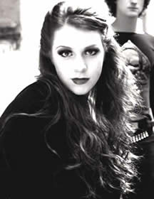
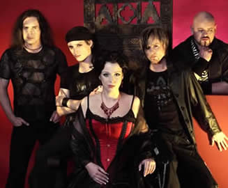

Entrevista
de Lisa Schaphaus à John Wolff - Sonic Cathedral - Novembro
de 2004
Fale um pouco
sobre a banda, sobre este nome escolhido e como se formou.
O nome Xandria surgiu de Marco (líder da banda).
Ele gostou da sonoridade deste nome místico que se ajustou
bem à proposta da banda. Também foi Marco que
procurou os outros integrantes da banda; e ele é nosso
principal compositor. Mas isto não significa que Philip,
Gerit, Nils e eu não influenciamos do nosso modo...
Como
você descreveria o som da banda para alguém que
ainda não os conhece?
Bem, Xandria está entre o Metal, Pop, Clássico,
Rock, trilha sonora, Jazz e gótico... O que mais posso
dizer? Nós somos "Xandriáticos"!
O que lhe dá inspiração
quando escreve as letras das músicas?
Tudo que está acontecendo no mundo ao meu redor: amor,
disputas, tristeza, dúvidas, ódio... e estas coisas
pequenas que fazem a vida tão grande.
Vocês têm ou já
consideraram compor uma letra em alemão?
Não. Talvez algum dia.
Quais obstáculos vocês
têm para compor em inglês?
Boa pergunta! Naturalmente, meu alemão é melhor
que o inglês. Mas eu realmente gosto muito do inglês
para cantar. É um idioma mais suave que o alemão.
Que treinamento vocal você
recebeu e com quantos anos descobriu seu talento?
Eu tive aulas de canto (ópera e clássico) durante
quatro anos. Mas ainda não descobri meu talento... Talvez
harpa?
Com dois CD’s lançados
até o momento, o que mais te faz sentir realizada?
O contato com os fãs é a coisa mais bonita e incrível
que eu já experimentei. Nada é mais intenso.
Em sua opinião, qual a melhor
apresentação que vocês fizeram em 2004?
Especialmente, nossa viagem à Coréia. Mas também
toda a turnê de Ravenheart que terminamos há
pouco tempo.
Qual foi o maior obstáculo que vocês tiveram que
superar?
No início todos éramos muito ingênuos. Todos
nós tivemos que superar nossas pequenas dúvidas
e problemas particulares porque eles não são bons
para a estrutura da banda e para o próprio desenvolvimento.
Você tem inspiração
para escrever suas letras por experiências próprias?
Ou as letras são sobre temas que a maioria das pessoas
pode se identificar?
Deveria ter lido as perguntas antes de respondê-las (risos).
É a mesma resposta da outra questão.
O título Ravenheart
é uma referência a Allan
Poe e sua obra O
Corvo. Você é uma admiradora deste escritor
e suas obras influenciaram a composição do CD?
Sim, eu sou uma grande admiradora de Allan Poe. Eu amo a atmosfera
de seus contos que serviram de inspiração para
toda a atmosfera do nosso álbum.
Considerando
que a Sonic Cathedral concentra-se em vocais femininos
de bandas de Metal/Rock, nós vimos este gênero
emergir nos últimos cinco anos. Você sente que
as vocalistas destas bandas estão conquistando o espaço
merecido na mídia?
Sim e não. É bom ver tantas vocalistas prosperando.
Mas todos temos que ter cuidado: todo músico deveria
ser forte o bastante para lutar por seu espaço. É
muito fácil fazer sucesso, mas também é
muito fácil cair no esquecimento...
Você ouve comentários
negativos sobre as mulheres vocalistas no metal?
Seguramente, mas eu rio deles! É sempre uma questão
de gostar ou não. Mas muitos destes comentários
incluem um modo muito machista e estúpido de ver o mundo.
Eu não me importo...
Você e o Marco têm
a maioria das composições do álbum. Vocês
fizeram uma boa parceria para compor? Como você descreveria
este processo e ele é muito cansativo a você e
ao Marco?
O Marco é um perfeccionista e eu sou um tanto preguiçosa...
Isto influi diretamente no nosso modo de trabalhar. Normalmente
ele apresenta uma idéia, então eu digo: isso é
bom! Eu crio a melodia e nós gravamos. Este é
o momento em que o Marco fica muito bravo comigo. Nós
discutimos durante alguns minutos e percebemos que estávamos
defendendo a mesma opinião desde o início e finalmente
somos novamente grandes amigos.
Quem é o gênio responsável pelas capas dos
CD’s?
Kai Hoffmann... Vocalista da banda alemã Secret Discovery.
E... Obrigado!
Eu percebi que nenhum baixista
foi citado no novo CD. Vocês planejam encontrar um novo
baixista? Ou um baixista de estúdio e um de apoio para
as apresentações ao vivo?
Há algum tempo estamos trabalhando com o nosso "novo"
baixista Nils Middelhauve e estamos muito felizes com ele.
O CD Kill the Sun foi
lançado no Brasil com bons resultados. Você se
surpreendeu com o sucesso?
Sim! Nunca entrará em minha cabeça que as pessoas
do mundo inteiro ouvem nosso som.
Onde vocês gostariam de promover uma turnê e, se
pudesse escolher, com qual banda de vocal feminino vocês
gostariam de tocar?
Há pouco tempo nós viajamos com o LAB,
uma grande banda da Finlândia e eu gostaria muito de viajar
novamente com eles. Ana, a vocalista, é uma pessoa maravilhosa.
E onde? Bem, nós gostaríamos de viajar pelo mundo
inteiro.
O que você mais gosta por
fazer parte do Xandria?
Me sinto livre para fazer o melhor trabalho do mundo e me expressar
perfeitamente. Passar tanto tempo com os amigos e conhecer outras
pessoas. Eu gosto de tudo por estar no Xandria.
O que você menos gosta por fazer parte do Xandria?
Que eu nunca poderei assistir ao Xandria no palco.
Qual a música do Xandria
que você mais gosta de cantar e por quê?
Ao vivo? Black Flame porque eu posso usar minha voz
com mais peso e Snow-White pela mesma razão.
Mas a que eu mais gosto é Eversleeping porque
toda vez que eu canto esta música no palco eu sinto uma
enorme conexão com o público.
Sonic
Cathedral agradece a oportunidade e deseja sucesso para vocês!
Extraída
de www.soniccathedral.com
Traduzida
e adaptada por Spectrum